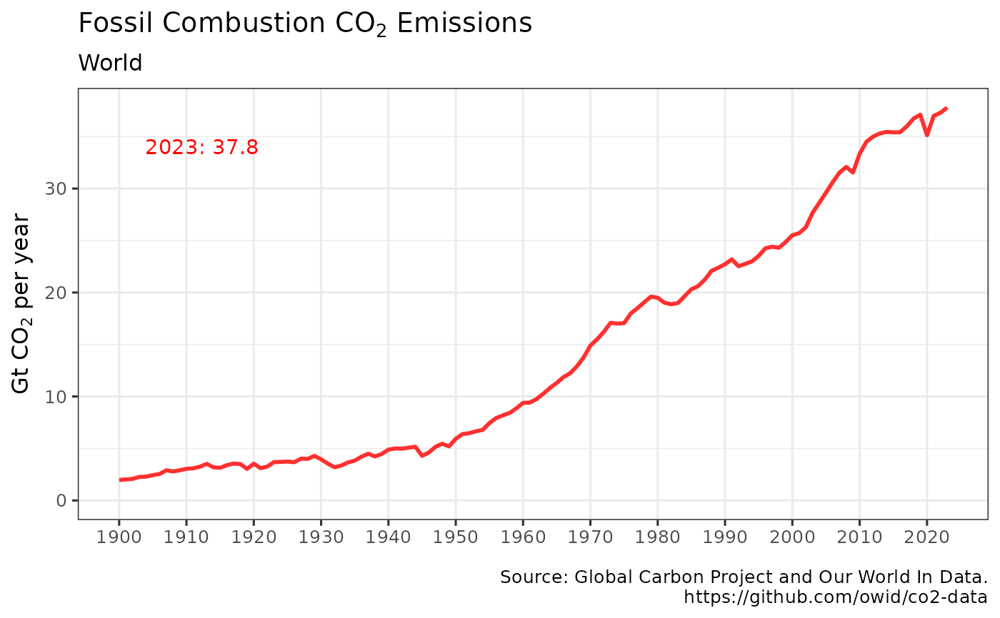

Retrieves Global Carbon Project (GCP) annual global carbon dioxide emissions since 1750 from Our World In Data repository https://github.com/owid/co2-data
Usage
get_emissions(use_cache = TRUE, write_cache = getOption("hs_write_cache"))Details
get_emissions invisibly returns a tibble with GCP's annual carbon dioxide emissions from fossil fuels in aggregate and for every nation.
The returned object includes ISO code, country, year, co2 emissions, growth rates, per capita, and decompositions by industry and gas type.
Please refer to above website for details.
References
https://www.globalcarbonproject.org/carbonbudget/
Friedlingstein, P. et al (2020), Global Carbon Budget 2020, Earth System Science Data, vol. 12, 3269-3340 doi:10.5194/essd-12-3269-2020
Author
Hernando Cortina, hch@alum.mit.edu
Examples
# \donttest{
# Fetch from cache if available:
emissions <- get_emissions()
#
# Force cache refresh:
emissions <- get_emissions(use_cache=FALSE)
#
# Review cache contents and last update dates:
hockeystick_cache_details()
#> <hockeystick cached files>
#> directory: /home/runner/.cache/R/hockeystick
#>
#
# Plot output using package's built-in ggplot2 settings
plot_emissions(emissions) # }
